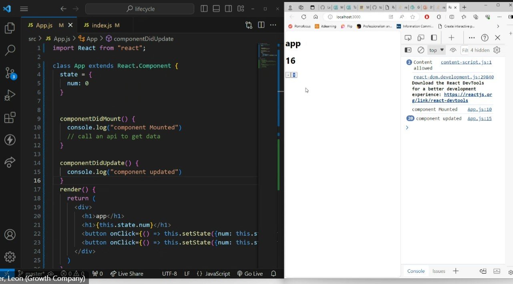
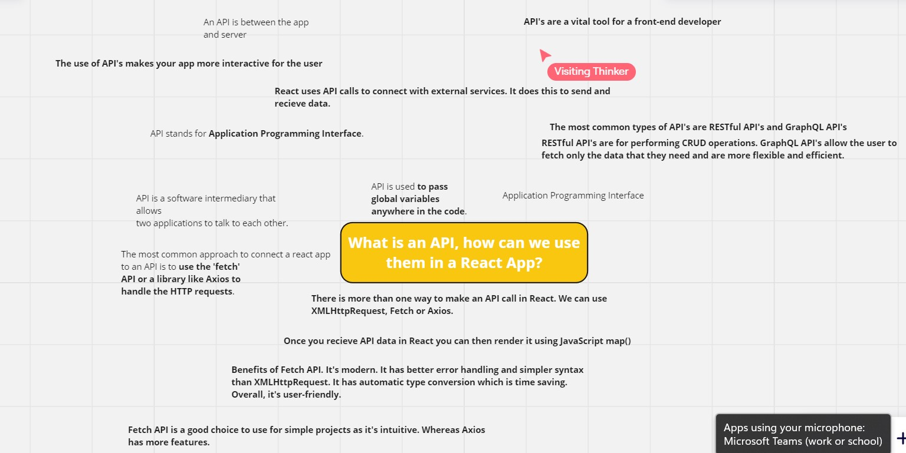
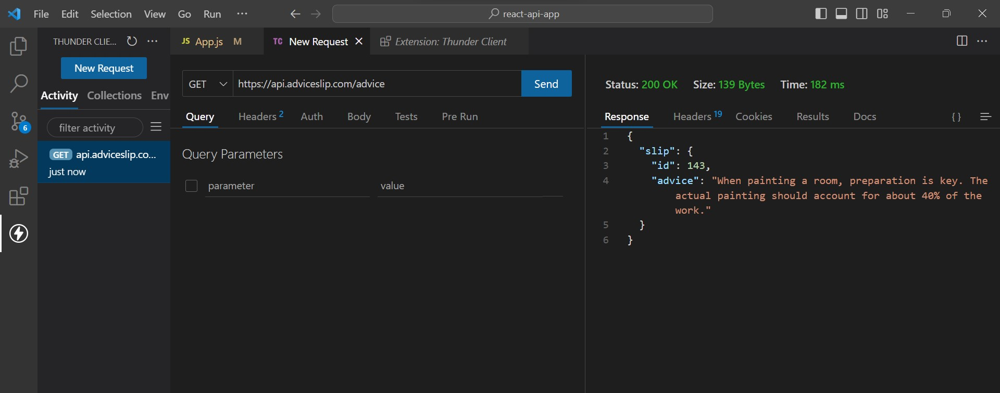
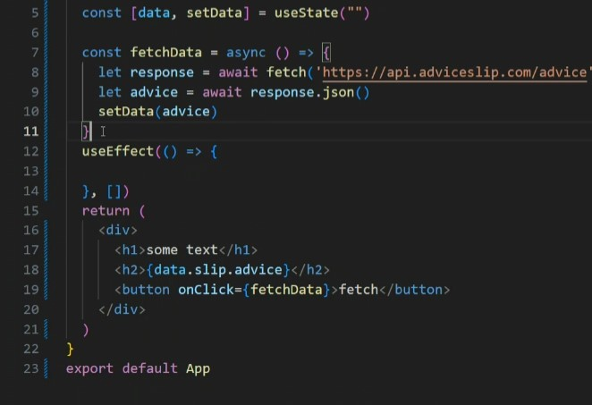
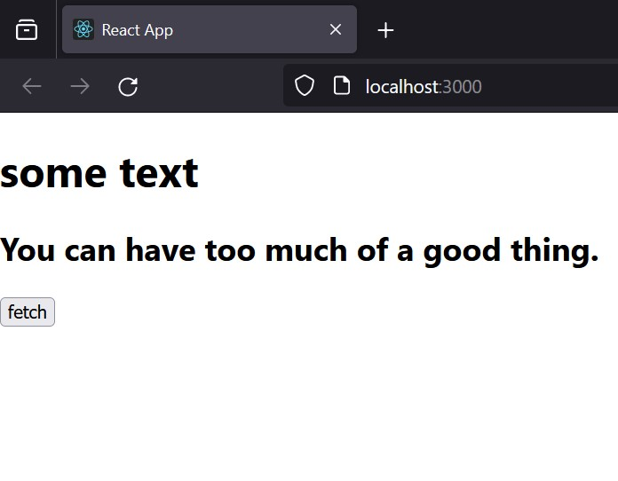
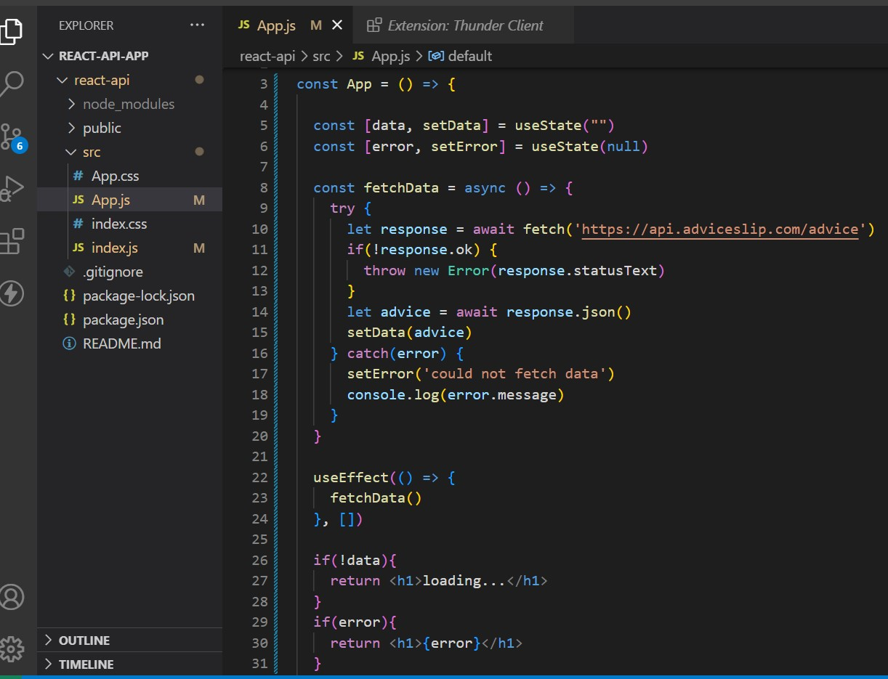
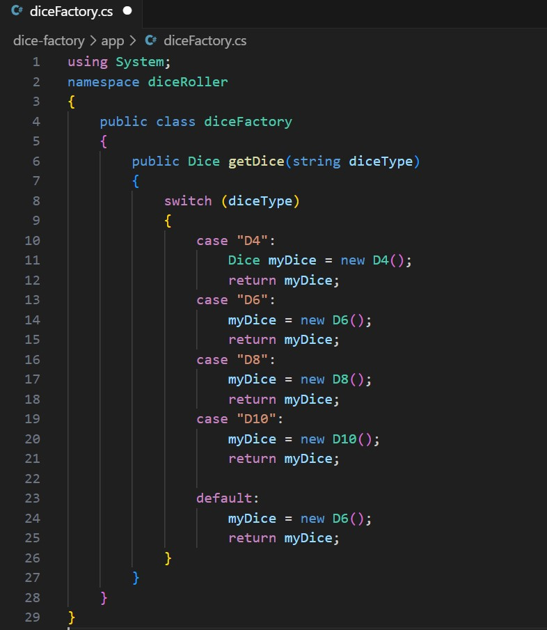
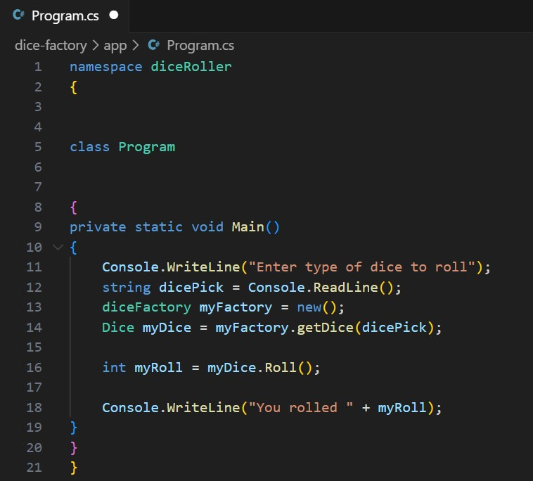
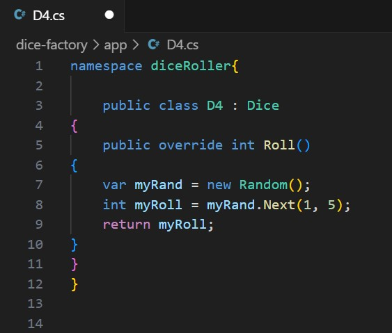

Week 8
Topics Included: React, Fullstack App Design, C#
Monday 26th February
In the morning we learnt how to deploy a React app. This allowed
me to deploy my todo app on Github. A link to this can be seen below:
Click here to see my todo app. It features a
random positive quote
generator.
In the afternoon we learnt about lifecycle methods in both class and functional components. This included
learning about ComponentDidMount, ComponentDidUpdate and ComponentWillUnmount. This is a topic that I feel I
will need to look into in more depth by myself for a greater understanding as the lifecycle of React has
many stages.

Here you can see example usage of ComponentDidMount and ComponentDidUpdate that
we were introduced to
Tuesday 27th February
On the Tuesday, we were introduced to the requirements of our next project. The topic of the project is the
design of a fullstack app. We were given the following five design stages to work on:
- Stage 1- The Concept
- Stage 2- Requirements
- Stage 3- Data Schema
- Stage 4- Functionality
- Stage 5- Interface Design
For my concept (Stage 1), I chose to design a womenswear green fashion app. This allowed me to combine the
knowledge I
attained
when I did an MA in Fashion Buying and Merchandising Management with the knowledge I have attained on the
bootcamp. I chose for the app to be a virtual sustainable fashion catalogue with images and links to
sustainable products from various brands. I also decided, at an early stage, that I wanted my app design to
allow users to become members, make a profile, review sustainable fashion items and share information with
one another.
In terms of requirements, I made the following initial list:
- Images and links to green fashion items and collections.
- User membership. Users can become a member and leave reviews of these pieces/collections.
- User profiles.
- Following. Users should be able to follow other users and be followed by them.
- Notifications. Users can then get a notification when someone they follow posts and review/comment.
- Discussion board. A page where users can discuss sustainable fashion, ask questions and make
recommendations.
- An index board. This will include a list of sustainable fashion charities, a list of sustainable brands,
figures of interest like Youtubers.
- A news page/blog where users can comment on posts.
- Users should be able to like and share each other's comments and reviews.
Further ideas for the growth of the app:
- The news page/blog could also include interviews with people within the fashion industry, on the topic
of sustainable fashion. Like a virtual magazine.
- It could potentially be expanded to include men's clothing too.
- An optional weekly/monthly newsletter for members.
- Following. Users should be able to follow other users and be followed by them.
- Notifications. Users can then get a notification when someone they follow posts and review/comment.
- Use of buttons for easy sharing other social media sites.
I also began the process of planning the schema and realised that it will need a complicated database with
many interconnected tables.
Wednesday 28th February
During week 8 we had been asked to research API's. Then, on the Wednesday morning we were asked to
contribute what we had learnt to a Miro board. A screenshot of the board can be seen below:

The Miro board, that we created as a group, on the topic of API'S.
The rest of the day involved further study of React. We learnt how to handle external data in React
components
using
HTTP requests. We also learnt how to appropriately handle errors when fetching extrernal data. It was really
interesting to see the wealth and variety of content that can be fetched using an API.

We were shown how to fetch data from an API using Thunder Client. This is a
valuable technique as it gives you more information on what you can fetch with a particular API.

The first code we used to fetch data from an API and display it in the browser.
This involved the use of useState and JSX.

Here you can see the h1 text, data from the API and the fetch button in the
browser. Each time I clicked the fetch button in the browser, another piece of advice was fetched from the
API and presented in place of the last.

In this code you can see how we were shown to use async and await and try and
catch to appropriately deal with errors in fetching data.
Thursday 29th February
On the Thursday, we looked further into C# and were guided in the creation of a C# dice factory. Screenshots
of the C# code I wrote for this lesson can be seen below:



Friday 1st March